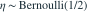
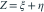
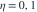
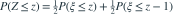

与

独立，
。Z 的分布函数为？- A
- B
- C
- D
我已思考，展开答案与解析
正确答案：B
- 按

分解，全概率公式给
。 - 因此是两个平移正态分布的混合，通常不是单个正态分布。
易错提醒离散变量与连续变量相加仍可能为连续型，但分布不一定保持正态。
JYSG · 432精选 · 册内复旦大学432·2026年·二(2)；PDF第42页（印刷页40）
原大题拆解

独立，
。Z 的分布函数为？
分解，全概率公式给
。JYSG · 432精选 · 册内复旦大学432·2026年·二(2)；PDF第42页（印刷页40）
原大题拆解